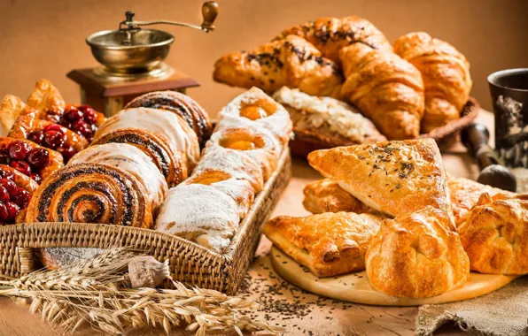

Fresh Ingredients
We carefully select quality ingredients for our bakery products.
Welcome to Sweet Crumb Bakery, where fresh bread, pastries and desserts are prepared with care every day.
We combine traditional baking methods with modern flavours to create food that makes every day sweeter.
Explore Our Menu
We carefully select quality ingredients for our bakery products.
Our bread and pastries are prepared fresh every morning.
Every product is prepared with attention to flavour, quality and presentation.